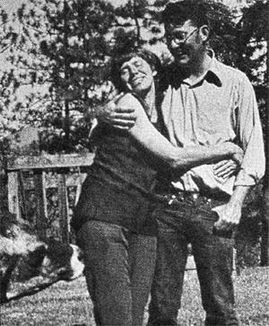
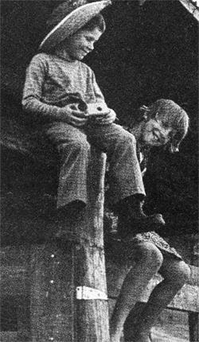

NOTE: As this issue of MOTHER goes to press, plans for the School of Country Living are being held up because of objections from some local residents (who apparently fear that the school's presence will change the area for the worse).
The Nez Perce County Planning Commission is scheduling a hearing shortly probably for the middle of April. Public support (or lack of it) will decide the fate of the project. Here's how you can help:
[1] If you're within driving distance of Idaho's Moscow/Lewiston area, your personal appearance at the hearing will be greatly appreciated. (Call the Emerys at 208-289-5061 for the time and place.) Carpools are being arranged, and organizational help is needed.
[2] Supporters who can't attend the hearing can help by writing the editors of local papers: the idahonian, Moscow, Idaho 83843 and the Morning Tribune, Lewiston, Idaho 83501.
[3] If you'd like further details on the plans for the school or the status of the legal proceedings, you're welcome to inquire by phone or mail.
Meanwhile, building is at a standstill and when (if) it is resumed, local labor will be used rather than volunteers. In any case, the school's opening has been postponed until-at the earliest-the spring of 1976.
Five years ago, Mike and Carla Emery were farming 115 acres near Kendrick, Idaho and raising a couple of children and, one way and another, managing to keep pretty busy. Which didn't deter Carla from starting on a book she hoped would guide other homesteaders to a satisfying living on the land (and, of course, generate some income at the same time).
The Old Fashioned Recipe Book turned out to be more of an undertaking than anyone had expected written as it was in the intervals of gardening, milking, canning, butchering, childbearing (three additions in four years), and various family crises including serious illness. There were times when both older Emerys hated the whole project. More than once, in fact, Carla seriously considered dropping the idea and refunding the money she'd collected on advance orders.
Finally-in the spring of 1974-the job was done 600 pages, typed, mimeographed, collated, ringbound, and mailed from improvised office space with the help of a few devoted friends and neighbors. The product was (and is) truly impressive: a homesteader's encyclopedia packed full of sound advice on rural self-sufficiency all of it warm, lively, and intensely personal. (See the Access listing in this issue.)
Sales were slow at first, but picked up when the author and her five children began making promotional trips to West Coast county fairs and exhibitions. Then Carla risked some money with a California public relations firm to arrange a few appearances on talk shows in the Los Angeles area. That did it: The Old Fashioned Recipe Book caught on with a bang. By the end of 1974-five editions later-over 13,000 copies had been sold and money was coming in at a startling rate.
That was fine, as far as it went but Carla had longterm plans that called for every penny and a great deal more besides. The new scheme wasn't just daring, it was downright outrageous. If a mere 600-page book seems like a lot to tackle under the circumstances, how about a complete homestead education center fully equipped and staffed to instruct 200 students at a time in the skills of country living?.
The whole notion was impossible, and still is but the Emerys are doing it anyhow. They've put down $25,000 on over 400 acres near their farm and paid an additional $5,000 for access from the county road. And buildings are already going up on the site, erected by volunteers under the direction of a Kendrick construction specialist named Art Boe.
Here's Carla's description of the complex she now plans: "Two big dormitories, a dining hall that can feed 220 at a crack, 50 family cabins, a methane power plant, water wheel grain grinder, solar water heating system, hydroelectric generator, fish ponds, one Grade A dairy barn for cows and another for goats, a walk-in freezer, two walkin coolers, air conditioned Grade A butchering facilities, carpenter shop, and so on."
That's a lot of building and a lot of money, too. Back in Kendrick the mimeograph machines are running full speed far into the night to crank out still more copies of the Old Fashioned Recipe Book. Meanwhile, Carla (by now an old hand at public appearances) is on the road for a four month promotional tour that will take in the 45 largest cities in the U.S.
With inquiries from prospective students already pouring in, the Emerys hope for an opening date of May 1975. The two-week school program (to be repeated at regular intervals throughout the summer and autumn) has been worked out in detail and includes courses in around 150 skills, with several choices available for each class period. Most of the instructors are the Emerys' neighbors older people who are experts at the arts of self-sufficiency after a lifetime of practice.
A typical student might, for example, begin the first Monday of the course with a lesson in horsemanship (first catch, bridle, and saddle your horse). Others, meanwhile, would be learning to build a root cellar or getting some practice in the dairy. After lunch, the participant might grind some grain and make bread with the flour unless he or she elected to try carpentry or butchering instead. The evening program might be an encounter with a wood stove, a concrete-pouring session, or an introduction to wind power. (That's a hard pace to keep up, of course. Sundays are free and the schedule offers opportunities to hike, swim, tour the area, and otherwise relax a bit.)
Living arrangements vary from dormitories and family cabins to areas for those who bring their own campers, trailers, tents, tipis, or whatever. (No motor vehicles are allowed elsewhere on school grounds, except for a bus to take students on tours and field trips.) Three meals a day home-grown as far as possible-are served in the dining hall and two free snacks are thrown in for anyone who has time to eat them.
Children are especially welcomed with or (for age 10 and up) without adults. Classes are open to any youngster who's old enough to enjoy them, and there's a separate program for small fry.
About costs: The fee for an adult (16 and up) or an unaccompanied child is $25.00 per day half price on Sundays. Otherwise, children's rates are $12.50 daily for ages 7 through 16 and $5.00 for ages 4 through 6. No charge is made for the very small.
Sounds great but there's a lot to be done to make it all happen this summer. The last MOTHER heard, the School of Country Living still welcomed volunteers willing to work hard for "room, board, $10.00 a week, and the right to be part of a dream". If you're experienced in building or other homestead skills and want to help, contact the Emerys in Kendrick, Idaho 83537-JN.
|
 |
 |
|